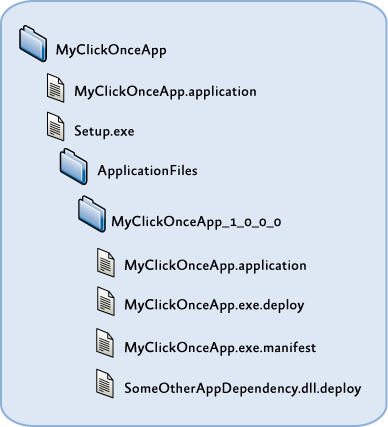

Deploying Applications Using the Prism Library for WPF
To successfully move a Prism application into production, you need to plan for deployment as part of the design process of your application. This topic covers the considerations and actions you need to perform to prepare your composite or modular application for deployment and the actions you need to take to get the application in the user's hands.
Deploying WPF Prism Applications
A WPF Prism application can be composed of an executable and any number of additional DLLs. The main executable is the shell application project. Some of the additional DLLs will be the modules of the application. There may be some additional DLLs that are just shared assemblies used by the shell and modules of the application. In addition, you might have a set of resource or content files that get deployed along with the application.
To deploy a WPF Prism application, you have three choices:
- "XCopy deployment"
- ClickOnce deployment
- Windows Installer deployment
"XCopy deployment" is used as a general term for manual deployment through some sort of file copy operation, which may or may not include the use of the XCOPY command-line tool. If you choose to deploy the application in this way, it is up to you to manually package the files and move them to the target computer. The application should be ready to run as long as the expected folder structure and relative locations of the shell application executable, the module DLLs, and the content files are maintained.
Usually, a more automatic means of deployment is desired to ensure that things get placed in the right location and the user has easy access to run the application. To facilitate that, you can choose to use ClickOnce or Windows Installer (.msi files), depending on what additional installation requirements exist for the application.
The decision of whether to use ClickOnce or Windows Installer is often misunderstood. ClickOnce is not intended to be a one-size-fits-all deployment technology. It is intended for applications that need a low-impact install on a client computer. If your application needs to make computer-wide changes when it is installed—such as to install drivers, integrate with other applications, install services and other things that go outside the scope of just running your executable, ClickOnce is probably not an appropriate deployment choice. However, if you have a lightweight installation on the client computer and you want to benefit from network deployment and update of your WPF application, ClickOnce can be a great choice.
To create a Windows Installer deployment package (.msi file) for your application, you have a variety of choices, including Visual Studio Setup projects, Windows Installer XML (WiX) projects, or numerous third-party installer creation products.
Deploying WPF Prism Application with ClickOnce
ClickOnce is a Windows Presentation Foundation (WPF) or Windows Forms deployment mechanism that has been part of the .NET Framework since version 2.0. ClickOnce enables automatic deployment and update of WPF applications over the network from a deployment server. WPF Prism applications can use ClickOnce to get the shell, modules, and any other dependencies deployed to the client computer. The main challenge with Prism applications is that the Visual Studio publishing process for ClickOnce does not automatically include dynamically loaded modules in the published application.
Deploying a WPF application with ClickOnce is a two-step process. First, you have to publish the application from Visual Studio, and then you can deploy it to client computers. Publishing the application generates two manifests (a deployment manifest and an application manifest), and it copies the application files to a publish directory. That publish folder can then be moved to another server that may not be directly accessible from the developer computer to make the published application accessible to client computers from a known location and URL. Deploying an application to a client computer simply requires providing a URL or link that the user can navigate to. The URL points to the deployment manifest on the publishing deployment server. When that URL is loaded in the browser, ClickOnce on the client computer downloads the manifests and the application files specified by the manifests. After the files are downloaded and stored under the user profile, ClickOnce then launches the application. If subsequent updates are published to the deployment server, ClickOnce can automatically detect those updates, download, and apply them, or there are settings that allow you to detect and apply updates on demand or in the background after the application has launched.
When you publish a WPF Prism application that has dynamically loaded modules, the shell project will typically not have project references to the dynamically loaded modules. As a result, the published ClickOnce application manifest also does not include those module files, and if you deploy the application using ClickOnce, the client computer will not get the module files. To address this, you must modify the application manifest to include the module files that are not referenced by the shell application project.
ClickOnce Publishing Process
You can publish ClickOnce applications from Visual Studio 2013 using the Windows Software Development Kit (SDK) tool named the Manifest Generating and Editing tool (Mage) or a custom tool that uses the ClickOnce publishing APIs. Visual Studio exposes most of the capabilities needed for ClickOnce publishing. However, Visual Studio may not be available or desired for IT administrators who manage ClickOnce deployments on the server. Mage is designed to address most common administrative tasks for ClickOnce; it is a lightweight .NET Framework Windows-based application that can be given to your administrators. However, Mage requires too many detailed steps, performed in the correct order, to successfully complete common tasks such as modifying the application files listed in the application manifest. To make these tasks simpler, a custom utility is needed.
The Manifest Manager Utility sample utility demonstrates how to use the ClickOnce publishing API to manage deployment and application manifests in a simpler way. This utility is used for updating application manifest file lists and deployment manifest settings in a single user interface (UI) and its use is described in later sections in this topic for initial deployment and update of a Prism application. The Manifest Manager Utility uses APIs exposed in the Microsoft.Build.Tasks.Deployment namespace to load, manipulate, and save modified manifest files for a ClickOnce deployment. You can download the Manifest Manager Utility from the Prism community site on Codeplex. To learn the specific steps involved in publishing and updating a WPF Prism application that uses dynamic module loading, see the WPF Prism Deployment Hands-On Lab: Publishing and Updating with ClickOnce.
The following illustration shows the typical structure for a ClickOnce application publication, based on the way Visual Studio generates the deployment folders when you publish an application with ClickOnce. It includes a root folder for the application, which contains the default deployment manifest (.application file). The default deployment manifest usually points to the most recently published version when generated by Visual Studio, but it can be changed to point to whichever version the administrator chooses. The root folder also contains the Setup.exe bootstrapper, which allows you to deploy prerequisites for your application that might require an installer or executable to run before deploying the application using ClickOnce. There is then a subfolder for the application-specific files, under which you get a separate subfolder for each version that you publish. The publish version is a separate project setting and entry in the deployment manifest file for versioning the deployment as a whole, as opposed to the individual assembly versions of the contained assemblies. The publish version is used by ClickOnce to determine when there is an update available from a client that has already installed a ClickOnce application.

ClickOnce publish folder structure
Under each publish version's application files folder, you have another copy of the deployment manifest (.application file) that can be used to deploy specific versions to a client computer, or it can be copied to the root folder to cause a server-side rollback to a previous version. The application executable, in addition to any dependent libraries (such as Prism module assemblies) and resource files, will also be in this folder and will be automatically suffixed by a .deploy file name extension when published by Visual Studio. This is done to simplify the file extension mappings on the publishing web server so that you don't have to allow downloads of .dll, .exe, and a myriad of other potential file types that the application is composed of.
The application manifest (.exe.manifest) file is also contained in this folder and is referenced by the deployment manifest. It contains the list of files the application is composed of with hash values per file to assist in change detection; it also contains a list of permissions required by the application to run because ClickOnce can launch applications in a partial trust AppDomain if desired.
If you manually generate or update a ClickOnce application publication using either Mage or a custom tool, you are not constrained to this folder and file structure. For any particular ClickOnce publication, the chain of dependencies includes the following:
- It includes a deployment manifest that points to the application manifest through an embedded code base URL.
- It includes an application manifest that contains relative paths to each of the application files. These files must reside in the same folder or a subfolder from where the application manifest resides.
It includes the application files themselves, usually with a .deploy file name extension appended to the file name to simplify mapping these files to MIME types on the deployment server. ClickOnce automatically strips off the .deploy file name extension on the client side after the file is downloaded.
ClickOnce Deployment and Update Process
The actual deployment of the application to a user via ClickOnce is almost always initiated by providing a URL or hyperlink to the deployment manifest of your published application on the deployment server. The user can click the hyperlink or enter the address in a browser, and the ClickOnce deployment process is invoked. After the manifest and application files are downloaded to the client computer, the application is launched. There are ClickOnce options that allow you to install the application during the initial deployment for offline use, or you can require the user to launch the application using the link or URL every time. When you publish a new version of the application to the deployment server, ClickOnce can automatically or manually check for updates and will download and apply the update for the next time the application launches.
More Information
You can download the Manifest Manager Utility from the Prism community site on Codeplex.
To learn the specific steps involved in publishing and updating a WPF Prism application that uses dynamic module loading, see the Publishing and Updating Applications Using the Prism Library Hands-on Lab.